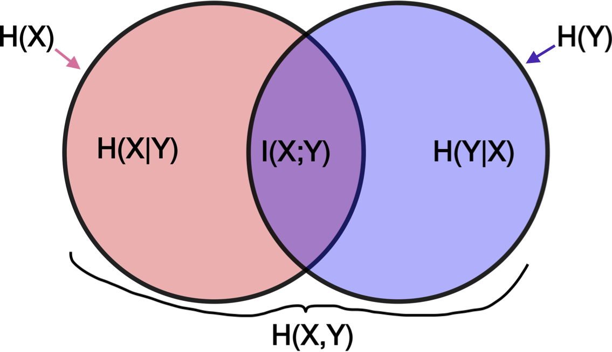
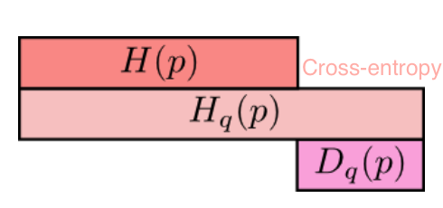

info theory
view markdown- material from Cover “Elements of Information Theory”
overview
- with small number of points, estimated mutual information is too high
- founded with claude shannon 1948
-
set of principles that govern flow + transmission of info
- X is a R.V. on (finite) discrete alphabet ~ won’t cover much continuous
entropy, relative entropy, and mutual info
entropy
- $H(X) = - \sum p(x) :\log p(x) = E[h(p)]$
- $h(p)= - \log(p)$
- $H(p)$ implies p is binary
- usually for discrete variables only
- assume 0 log 0 = 0
- intuition
- higher entropy $\implies$ more uniform
- lower entropy $\implies$ more pure
- expectation of variable $W=W(X)$, which assumes the value $-log(p_i)$ with probability $p_i$
- minimum, average number of binary questions (like is X=1?) required to determine value is between $H(X)$ and $H(X)+1$
- related to asymptotic behavior of sequence of i.i.d. random variables
-
properties
- $H(X) \geq 0$ since $p(x) \in [0, 1]$
- funtion of distr. only, not the specific values the RV takes (the support of the RV)
- gaussian has max entropy s.t. variance constraint
-
$H(Y|X)=\sum p(x) H(Y|X=x) =- \sum_x p(x) \sum_y p(y x) \log : p(y x)$ - $H(X,Y)=H(X)+H(Y|X) =H(Y)+H(X|Y)$
relative entropy / mutual info
- relative entropy = KL divergence - measures distance between 2 distributions
- \[D(p\|\|q) = \sum_x p(x) log \frac{p(x)}{q(x)} = \mathbb E_p log \frac{p(X)}{q(X)} = \mathbb E_p[-\log q(X)] - H(p)\]
- if we knew the true distribution p of the random variable, we could construct a code with average description length H(p).
- If, instead, we used the code for a distribution q, we would need H(p) + D(p||q) bits on average to describe the random variable.
- $D(p||q) \neq D(q||p)$
- properties
- nonnegative
- not symmetric
-
mutual info I(X; Y): how much you can predict about one given the other
- $I(X; Y) = \sum_X \sum_y p(x,y) log \frac{p(x,y)}{p(x) p(y)} = D(p(x,y)||p(x) p(y))$
- $I(X; Y) = -H(X,Y) + H(X) + H(Y))$
-
$=I(Y X)$
-
- $I(X; X) = H(X)$ so entropy sometimes called self-information

-
cross-entropy: $H_q(p) = -\sum_x p(x) : log : q(x)$

chain rules
- entropy - $H(X_1, …, X_n) = \sum_i H(X_i | X_{i-1}, …, X_1) = H(X_n | X_{n-1}, …, X_1) + … + H(X_1)$
- conditional mutual info $I(X; Y|Z) = H(X|Z) - H(X|Y,Z)$
- $I(X_1, …, X_n; Y) = \sum_i I(X_i; Y|X_{i-1}, … , X_1)$
- conditional relative entropy $D(p(y|x) || q(y|x)) = \sum_x p(x) \sum_y p(y|x) log \frac{p(y|x)}{q(y|x)}$
- $D(p(x, y)||q(x, y)) = D(p(x)||q(x)) + D(p(y|x)||q(y|x))$
axiomatic approach
- fundamental theorem of information theory - it is possible to transmit information through a noisy channel at any rate less than channel capacity with an arbitrarily small probability of error
- to achieve arbitrarily high reliability, it is necessary to reduce the transmission rate to the channel capacity
- uncertainty measure axioms
- H(1/M,…,1/M)=f(M) is a montonically increasing function of M
- f(ML) = f(M)+f(L) where M,L $\in \mathbb{Z}^+$
- grouping axiom
- H(p,1-p) is continuous function of p
- $H(p_1,…,p_M) = - \sum p_i log p_i = E[h(p_i)]$
- $h(p_i)= - log(p_i)$
- only solution satisfying above axioms
- H(p,1-p) has max at 1/2
- lemma - Let $p_1,…,p_M$ and $q_1,…,q_M$ be arbitrary positive numbers with $\sum p_i = \sum q_i = 1$. Then $-\sum p_i log p_i \leq - \sum p_i log q_i$. Only equal if $p_i = q_i : \forall i$
- intuitively, $\sum p_i log q_i$ is maximized when $p_i=q_i$, like a dot product
- $H(p_1,…,p_M) \leq log M$ with equality iff all $p_i = 1/M$
- $H(X,Y) \leq H(X) + H(Y)$ with equality iff X and Y are independent
- $I(X,Y)=H(Y)-H(Y|X)$
- sometimes allow p=0 by saying 0log0 = 0
- information $I(x)=log_2 \frac{1}{p(x)}=-log_2p(x)$
- reduction in uncertainty (amount of surprise in the outcome)
- if the probability of event happening is small and it happens the info is large
- entropy $H(X)=E[I(X)]=\sum_i p(x_i)I(x_i)=-\sum_i p(x_i)log_2 p(x_i)$
-
information gain $IG(X,Y)=H(Y)-H(Y|X)$
- $=-\sum_j p(x_j) \sum_i p(y_i|x_j) log_2 p(y_i|x_j)$
- parts
- random variable X taking on $x_1,…,x_M$ with probabilities $p_1,…,p_M$
- code alphabet = set $a_1,…,a_D$ . Each symbol $x_i$ is assigned to finite sequence of code characters called code word associated with $x_i$
- objective - minimize the average word length $\sum p_i n_i$ where $n_i$ is average word length of $x_i$
- code is uniquely decipherable if every finite sequence of code characters corresponds to at most one message
- instantaneous code - no code word is a prefix of another code word
basic inequalities
jensen’s inequality
- convex - function lies below any chord
- has positive 2nd deriv
- linear functions are both convex and concave
- Jensen’s inequality - if f is a convex function and X is an R.V., $f(E[X]) \leq E[f(X)]$
- if f strictly convex, equality $\implies X=E[X]$
- implications
- information inequality $D(p||q) \geq 0$ with equality iff p(x)=q(x) for all x
- $H(X) \leq log |X|$ where |X| denotes the number of elements in the range of X, with equality if and only X has a uniform distr
- $H(X|Y) \leq H(X)$ - information can’t hurt
- $H(X_1, …, X_n) \leq \sum_i H(X_i)$
mdl
- chapter 1: overview
- explain data given limited observations
- benefits
- occam’s razor
- no overfitting (can pick both form of model and params), without need for ad hoc penalties
- bayesian interpretation
- no need for underlying truth
- description - in terms of some description method
- e.g. a python program which prints a sequence then halts = Kolmogorov complexity
- invariance thm - as long as sequence is long enough, choice of programming language doesn’t matter) - (kolmogorov 1965, chaitin 1969, solomonoff 1964)
- not computable in general
- for small samples in practice, depends on choice of programming language
- in practice, we don’t use general programming languages but rather select a description method which we know we can get the length of the shortest description in that class (e.g. linear models)
- trade-off: we may fail to minimally compress some sequences which have regularity
- knowing data-generating process can help compress (e.g. recording times for something to fall from a height, generating digits of $\pi$ via taylor expansion, compressing natural language based on correct grammar)
- e.g. a python program which prints a sequence then halts = Kolmogorov complexity
- simplest version - let $\theta$ be the model and $X$ be the data
-
2-part MDL: minimize $L(\theta) + L(X \theta)$ -
$L(X \theta) = - \log P(X \theta)$ - Shannon code - $L(\theta)$ - hard to get this, basic problem with 2-part codes
- have to do this for each model, not model-class (e.g. different linear models with same number of parameters would have different $L(\theta)$
-
-
stochastic complexity (“refined mdl”): $\bar{L}(X \theta)$ - only construct one code -
ex. $\bar L(X \theta) = \theta _0 + L(X \theta)$ - like 2-part code but breaks up $\theta$ space into different sets (e.g. same number of parameters) and assigns them equal codelength
-
- normalized maximum likelihood - most recent version - select from among a set of codes
-
- chapter 2.2.1 background
- in mdl, we only work with prefix codes (i.e. no codeword is a prefix of any other codeword)
- these are uniquely decodable
- in fact, any uniquely decodable code can be rewritten as a prefix code which achieves the same code length
- in mdl, we only work with prefix codes (i.e. no codeword is a prefix of any other codeword)
-
chapter 2.2.2: probability mass functions correspond to codelength functions
- coding: $x \sim P(X)$, codelengths $\ell(x)$
- Kraft inequality: $\sum_x 2^{-\ell(x)} \leq 1$
- given a code $C$ and a prob distr. $P$, we can construct a code so short codewords get high probs and vice versa
- given $P$, $\exists C, \forall z : L_C(z) \leq \lceil -\log P(z) \rceil$
- given $C’$, $\exists P’ : \forall z -\log P(z) = L_{C’}(z)$
- coding: $x \sim P(X)$, codelengths $\ell(x)$
- we redefine codelength so it doesn’t require actual integer lengths
- we don’t care about the actual encodings, only the codelengths
-
given a sample space $\mathcal Z$, the set of all codelength functions $L_\mathcal Z$ is the set of functions $L$ on $\mathcal Z$ where $\exists \,Q$ (distr), such that $\sum_z Q(z) \leq 1$ and $\forall z,\; L(z) = -\log Q(z)$
- uniform distr. - every codeword just has same length (fixed-length)
-
we usually assume we are encoding a sequence $x^n$ which is large, so the rounding becomes negligible
- ex. encoding integers: send $\log k$ zeros, then add a 1, then uniform code from 0 to $2^{\log k}$
- Given $P(X)$, the codelength function $L(X) = -\log P(X)$ minimizes expected code length for the variable $X$
-
chapter 2.2.3 - the information inequality: $E_P[-\log Q(X)] > E_P[-\log P(X)]$
- if $X$ was generated by $P$, then codes with length $-\log P(X)$ give the shortest encodings on average
- not surprising - in a large sample, X will occur with frequency proportial to $P(X)$, so we want to give it a short codelength $-\log P(X)$
- consequently, ideal mean length = $H(X)$
-
chapter 2.4: crude mdl ex. pick order of markov chain by minimizing $L(H) + L(D H)$ where $D$ is data, $H$ is hypothesis -
we get to pick codes for $L(H)$ and $L(D H)$ -
let $L(x^n H) = -\log P(x^n H)$ (length of data is just negative log-likelihood) - for $L(H)$, describe length of chain $k$ with code for integers, then $k$ parameters between 0 and 1 by describing the counts generated by the params in n samples - this tends to be harder to do well
-
-
chapter 2.5: universal codes + models
-
note: these codes are only universal relative to the set of considered codes $\mathcal L$
-
universal model - prob. distr corresponding to universal codes
- (different from how we use model in statistics)
-
given a set of codes $\mathcal L = { L_1, L_2, … }$, given a squences $x^n$, one of the codes $L \in \mathcal L$ has the shortest length for that sequence $\bar L(x^n)$
- however, we have to pick one $L$, before we see $x^n$
-
universal code - one code such that no matter which $x^n$ arrives, length is not much longer than the shortest length among all considered codes
- ex. 2-part codes: first send bits to pick among codes, then use the selected code to encode $x^n$ - overhead is small because it doesn’t depend on $n$
- among countably infinite codes, can still send $k$ to index the code, although $k$ can get very large
- ex. bayesian universal model - assign prior distr to codes
-
ex. nml is an optimal (minimizes worst-case regret) universal model
-
$\bar P_{\text{nml}} (x^n) = \frac{P(x^n \hat \theta (x^n))}{\sum_{z^n \in \mathcal X^n} P(z^n \hat \theta (z^n))}$ - literally a normalized likelihood
- regret of $\bar P$ relative to $M$: $−\log \bar P(x^n)− \min_{P \in M} -\log P(x^n )$
- measures the performance of universal models relative to a set of candidate sources M
- $\bar P$ is a probability distribution on $\mathcal X^n$ ($P$ is not necessarily in $M$)
- when evaluating a code, we may look at the worst regret over all $x^n$, or the average
-
-